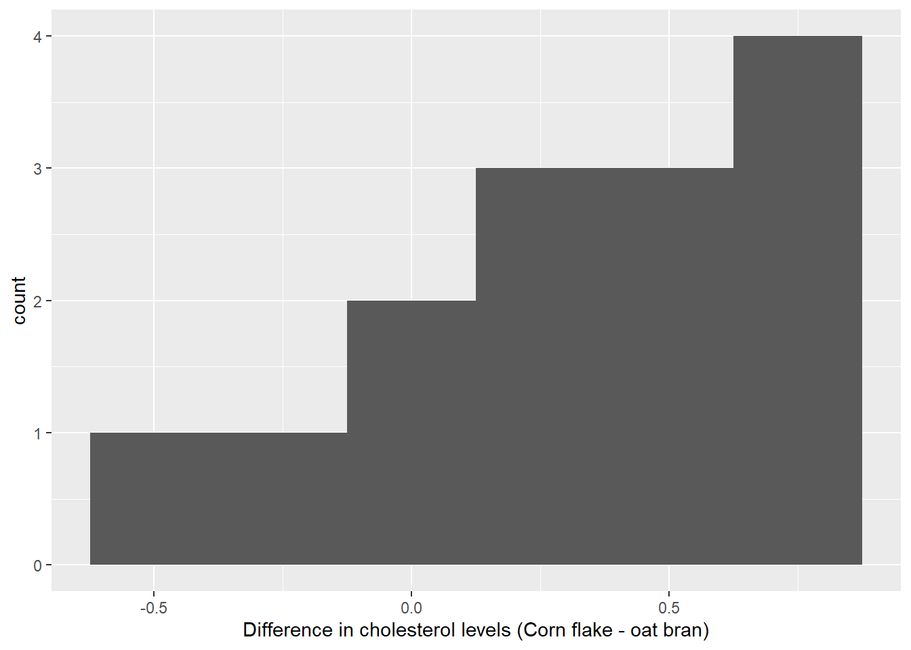
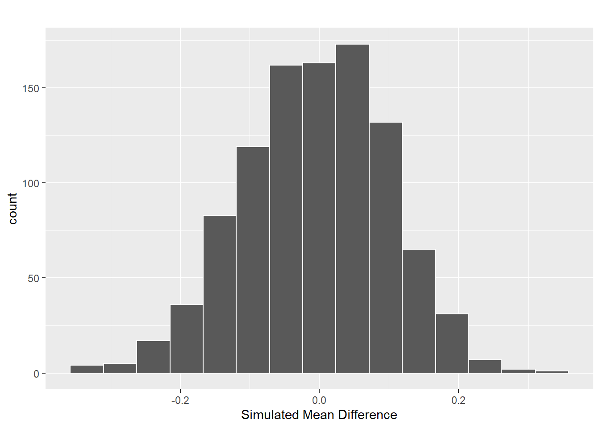
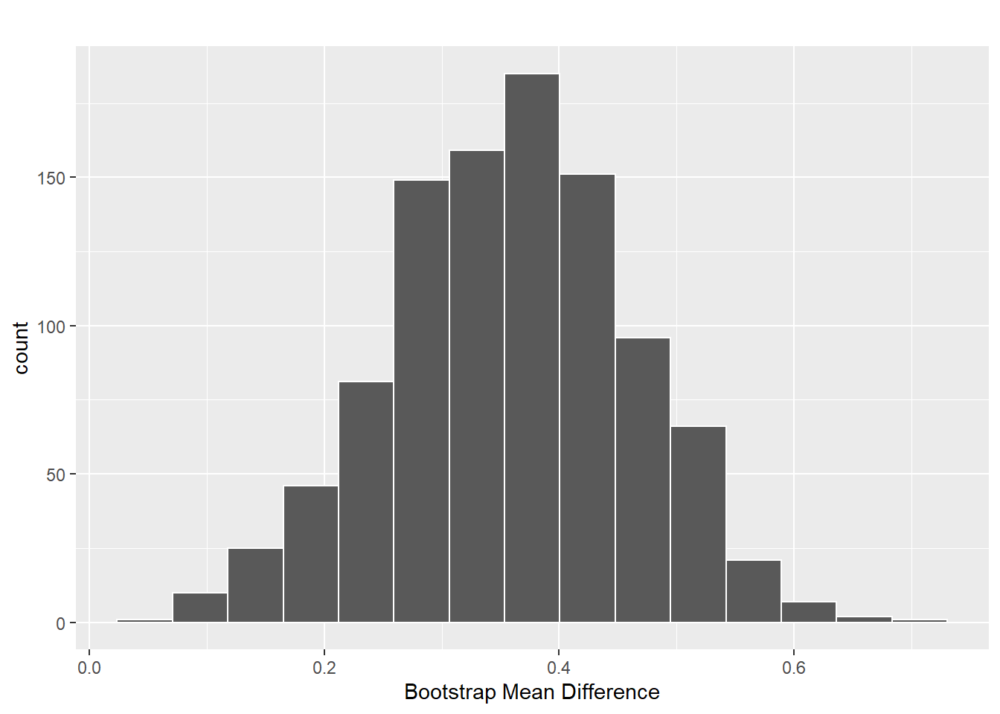

Activity 6B: Cholesterol III
Inference for Paired Data
Learning outcomes
Given a research question involving paired differences, construct the null and alternative hypotheses in words and using appropriate statistical symbols.
Describe and perform a simulation-based hypothesis test for a paired mean difference.
Interpret and evaluate a p-value for a simulation-based hypothesis test for a paired mean difference.
Use bootstrapping to find a confidence interval for a paired mean difference.
Interpret a confidence interval for a paired mean difference.
Use a confidence interval to determine the conclusion of a hypothesis test.
Review from Activity 6A: Cholesterol II
Researchers investigated whether eating corn flakes compared to oat bran had an effect on serum cholesterol levels. Twenty-eight (28) individuals were randomly assigned a diet that included either corn flakes (14 individuals) or oat bran (14 individuals). After two weeks, cholesterol levels (mmol/L) of the participant were recorded.
But actually what happened was…
Fourteen (14) individuals were randomly assigned a diet that included either oat bran or corn flakes. After two weeks on the initial diet, serum cholesterol were measured and the participants were then crossed-over to the alternate diet. After two-weeks on the second diet, cholesterol levels were once again recorded.
Vocabulary Review
- How was the data collected differently from the previous activities?
- Are the cholesterol levels independent across the 28 measurements? Explain.
Since we can match or pair the cholesterol level measurements between the treatment groups, we call this a paired study design. These could be paired up by taking measurements on the same observational unit twice or taking measurements on similar observational units (e.g. identical twins, similar fields, etc.). When analyzing the data and making conclusions, we must take this design into consideration or we are violating a key assumption (independence).
The data set below shows the data for each participant ID. The CORNLK column indicates the cholesterol level for that individual on the corn flake diet and the OATBRAN column indicates the cholesterol level for that individual on the oat bran diet.
| ID | CORNFLK | OATBRAN | CholesterolDiff |
|---|---|---|---|
| 1 | 4.61 | 3.84 | 0.77 |
| 2 | 6.42 | 5.57 | 0.85 |
| 3 | 5.40 | 5.85 | -0.45 |
| 4 | 4.54 | 4.80 | -0.26 |
| 5 | 3.98 | 3.68 | 0.30 |
| 6 | 3.82 | 2.96 | 0.86 |
- What does the
CholesterolDiffcolumn represent? Why does this calculation make sense?
Ask a Research Question
Researchers are still interested in whether eating corn flakes compared to oat bran had an effect on serum cholesterol levels.
- Write the null and alternative hypothesis in words.
- Write the null and alternative hypothesis in notation.
Summarize and Visualize the Data
A histogram of the differences in cholesterol levels for the 14 individuals and a table of summary statistics are shown below.
ggplot(data = cholesterol_data,
mapping = aes(x = CholesterolDiff)) +
geom_histogram(binwidth = 0.25) +
labs(x = "Difference in cholesterol levels (Corn flake - oat bran)") 
Summary statistics for the cholesterol levels from the corn flake diet CORNFLK, cholesterol levels from the oat bran diet OATBRAN, and the differences in cholesterol levels between the corn flake and oat bran diets CholesterolDiff.
Diet min Q1 median Q3 max mean sd n missing
1 CORNFLK 2.25 3.9125 4.44 4.9100 6.42 4.443571 0.9688344 14 0
2 OATBRAN 1.84 3.6900 3.84 4.7025 5.85 4.080714 1.0569802 14 0 Variable min Q1 median Q3 max mean sd n missing
1 CholesterolDiff -0.45 0.115 0.36 0.695 0.86 0.3628571 0.4059638 14 0- Report the observed statistic of interest (mean difference) for the data. Use notation to assign a symbol to this. Have we seen this number before? Where?
Use Statistical Methods to Draw Inferences from the Data
Hypothesis Test
To simulate the null distribution of paired sample mean differences we need to randomly assign the cholesterol level for each participant to be either the corn flake or the oat bran cholesterol level.
Take for example participant ID 1. On the corn flake diet, their cholesterol level was 4.61 mmol/L and on the oat bran diet, it was 3.84 mmol/L. If we assume the null is true, that the mean of the differences is 0, then there is no relationship between participant 1’s cholesterol level and the diet they were on. That means, Participant 1 would have been just as likely to see a cholesterol level of 3.84 mmol/L on the corn flake diet.
- How can we use a coin to decide which values for each participant are randomly assigned to the corn flake diet?
A simulated null distribution is shown below.
null_dist <- cholesterol_data %>%
specify(response = CholesterolDiff) %>%
hypothesise(null = "point", mu = 0) %>%
generate(reps = 1000, type = "bootstrap") %>%
calculate(stat = "mean")
null_dist %>%
visualise() +
labs(title = "",
x = "Simulated Mean Difference")
- Explain why the null distribution is centered at zero.
- Find the observed mean difference on the distribution. Hint: Look at question 8.
- Shade the area of the distribution you will use to calculate the p-value and estimate the p-value.
- How much evidence does this provide for a change in cholesterol level due to diet? How does this differ from the previous activities?
- Can we conclude that the diet caused the change? Explain.
Confidence Interval
The goal of a confidence interval is to estimate a plausible range of values for the population parameter.
- What is the population parameter in this study?
To create a bootstrap distribution, we do not assume the null hypothesis is true. Instead, we assume that the difference in cholesterol levels for these 14 individuals are representative of the differences in cholesterol levels for other individuals. So, we will randomly sample, with replacement, from our original sample to obtain a bootstrap sample.
I’ve created a bootstrap distribution below, using 1000 reps.
boot_dist <- cholesterol_data %>%
specify(response = CholesterolDiff) %>%
generate(reps = 1000, type = "bootstrap") %>%
calculate(stat = "mean")
boot_dist %>%
visualise() +
labs(title = "",
x = "Bootstrap Mean Difference")
- Where is the bootstrap distribution be centered? Why is it centered there?
- Use the table below to find a 99% confidence interval for \(\mu_{\text{diff}}\).
boot_dist %>%
summarize("0.5%" = quantile(stat, 0.005),
"1%" = quantile(stat, 0.01),
"2.5%" = quantile(stat, 0.025),
"5%" = quantile(stat, 0.05),
"90%" = quantile(stat, 0.90),
"95%" = quantile(stat, 0.95),
"97.5%" = quantile(stat, 0.975),
"99.5%" = quantile(stat, 0.995)
) %>%
pivot_longer(cols = everything(),
names_to = "Quantile",
values_to = "Value") %>%
knitr::kable(digits = 3)| Quantile | Value |
|---|---|
| 0.5% | 0.108 |
| 1% | 0.118 |
| 2.5% | 0.150 |
| 5% | 0.184 |
| 90% | 0.494 |
| 95% | 0.526 |
| 97.5% | 0.549 |
| 99.5% | 0.616 |
Communicate the Results and Address the Research Question
- Interpret the 99% confidence interval in the context of the problem.
Take-home messages
The differences in a paired data set are treated like a single quantitative variable when performing a statistical analysis. Paired data (or paired amples) occur when pairs of measurements are collected. We are only interested in the population (and sample) of differences, and not in the original data.
When analyzing paired data, the summary statistic is the “mean difference” not the “difference in means”1. This terminology will be very important in interpretations.
To create one simulated sample on the null distribution for the mean difference, we focus on each observation not on the groups of observations. For each observation, we flip a coin to decide which response value goes first and which goes second. We do this for every observation. Once we’ve randomly assigned which observation comes first, we find the difference in the values for each observation. Finally, we calculate and plot the simulated mean difference.
To create one simulated sample on the bootstrap distribution for a sample mean or mean difference, label \(n\) cards with the original values / differences. Randomly draw with replacement \(n\) times. Calculate and plot the resampled mean or mean difference.
Footnotes
Technically, if we calculate the differences and then take the mean (mean difference), and we calculate the two means and then take the difference (difference in means), the value will be the same. However, the sampling variability of the two statistics will differ, as we will see in the next activity↩︎